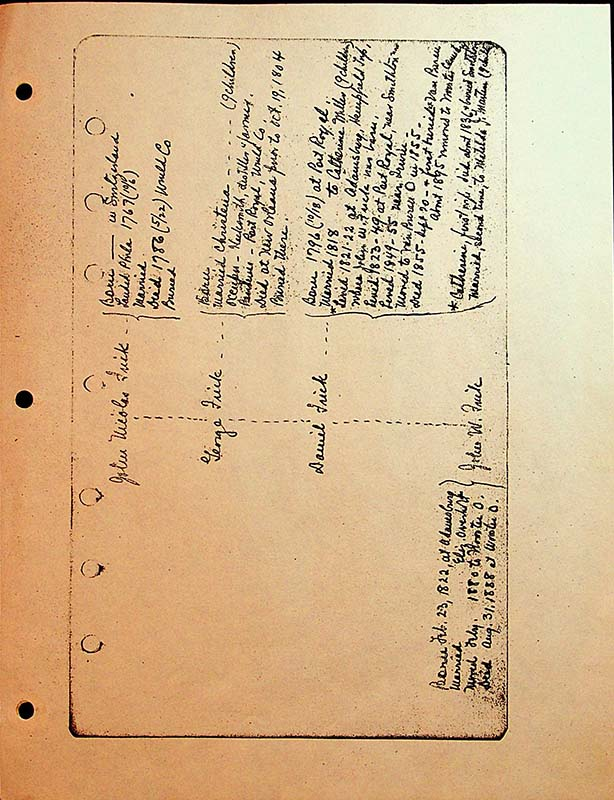

| John Nicolas Frick | Born in Switzerland Landed in Phila 1767 (10/6) Married Died 1786 (5/22) Wmld Co. Buried |
|
| George Frick | Born Married Christina (9 children) Occupa- Blacksmith, distiller, & farmer Residence Port Royal, Wmld Co. Died at New Orleans prior to Oct. 19, 1804 Buried there. |
|
| Daniel Frick | Born 1796 (10/18) Married 1818 to Catherine Miller (9 children) * Lived 1821-22 at Adamsburg, Hempfield Twp, where John W. Frick was born. Lived 1823-49 at Port Royal, near Smithton, Lived 1849-55 near Irwin Moved to Van Buren Ohio 1855- Died 1855 Sept 20- & first buried in Van Buren, about 1895 moved to Wooster Cemetery *Catherine, first wife, died died about 1836 & buried Smithton Married, second time, to Matilda J. Martin (9 children) |
|
| Born Feb. 23, 1822 at Adamsburg Married Eliz Overholt Moved July 1880 to Wooster O Died Aug. 31, 1888 at Wooster O |
John W. Frick |